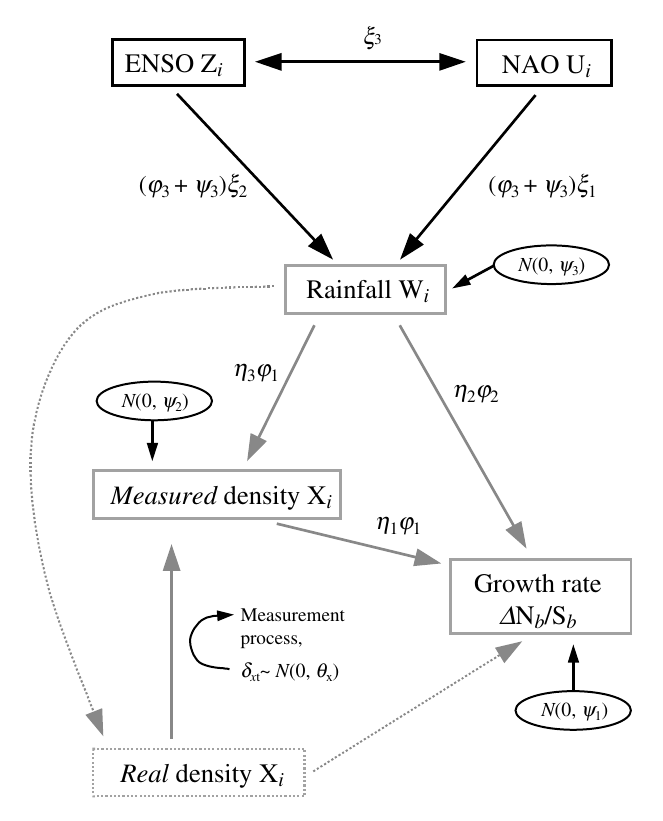

Pablo Almaraz, Juan A. Amat (2004) Complex structural effects of two hemispheric climatic oscillators on the regional spatio-temporal expansion of a threatened bird. Ecology Letters 7: 547–556, DOI: 10.1111/j.1461-0248.2004.00612.x
Useful links
Abstract
Links between climatic conditions in the eastern equatorial Pacific and extratropical ecological processes remain unexplored. The analysis of a 20-year time series of spatial and numeric dynamics of a threatened Mediterranean bird suggests, however, that such couplings can be remarkably complex. By providing a new ecological time-series modelling approach, we were able to dissect the joint effects of the El Niño/Southern Oscillation (ENSO), the North Atlantic Oscillation (NAO), regional weather, population density and stochastic variability on the expansion dynamics of the White-headed duck (Oxyura leucocephala) in Spain. Our results suggest that the spatial and numeric dynamics of ducks between peak brood emergence and wintering were simultaneously affected by different climatic phenomena during different phases of their global cycles, involving time lags in the numeric dynamics. Strikingly, our results point to both the NAO and the ENSO as potentially major factors simultaneously forcing ecological processes in the Northern Hemisphere, and suggest a new pathway for non-additive effects of climate in ecology.
Important figure

Citation
@article{Almaraz2004,
title = {Complex Structural Effects of Two Hemispheric Climatic Oscillators on the Regional Spatio-Temporal Expansion of a Threatened Bird},
author = {Almaraz, Pablo and Amat, Juan A.},
date = {2004-06-04},
journaltitle = {Ecology Letters},
volume = {7},
number = {7},
pages = {547--556},
doi = {10.1111/j.1461-0248.2004.00612.x}
}